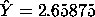

|
5.
Process Improvement
5.6. Case Studies 5.6.1. Eddy Current Probe Sensitivity Case Study
|
|||
| Parameter Estimates Don't Change as Additional Terms Added |
In most cases of least squares fitting, the model coefficient
estimates for previously added terms change depending on what
was successively added. For example, the estimate for the X1
coefficient might change depending on whether or not an X2 term
was included in the model. This is not the case when the
design is orthogonal, as is this 23 full factorial
design. In such case, the estimates for the previously included
terms do not change as additional terms are added. This means
the ranked list of effect estimates in the
Yates table simultaneously
serves as the least squares coefficient estimates for
progressively more complicated models.
The last column of the Yates table gave the residual standard deviation for 8 possible models, each one progressively more complicated. |
||
| Default Model: Grand Mean |
At the top of the Yates table, if none of the factors are important,
then the prediction equation defaults to the mean of all 8 response
values (the overall or grand mean). That is,
 From the last column of the Yates table, it was seen that this simplest of all models has a residual standard deviation (a measure of goodness of fit) of 1.74106 ohms. Finding a good-fitting model was not one of the stated goals of this experiment, but the determination of a good-fitting model is "free" along with the rest of the analysis and so it is included. |
||
| Conclusions |
From the last column of the Yates table, we summarize
the quality of the following prediction equations:
|
||